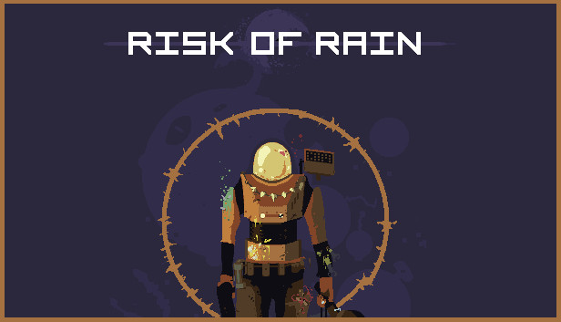

Risk of Rain Achievement Guide
This guide will teach you how to unlock each achievement in Risk of Rain on steam. This guide will not go over the basics of Risk of Rain and assumes you have completed the game at least once.
Achievement 1: Lizard Bait
‘Defeat 20 lemurians in one playthrough.’
This achievement is the easiest achievement to obtain, and you’ll likely stumble upon it accidentally. The simplest way to get this achievement is to start a run and wait on one of the following stages:
- Desolate Forest
- Dried Lake
- Damp Caverns
- Boar Beach
Lemurians spawn frequently on all of these, so killing 20 should come quickly.
Achievement 2: Better Luck Next Time
‘Fail a shrine 3 times in a row’
This achievement requires a bit of luck (or bad luck in this case). To complete it, find two chance shrines and spend all your money on them. After a few tries, you should get this achievement. Chance shrines are easier to find on early stages, so reset your run if you aren’t finding any.
Achievement 3: Lucky Devil
‘Pass a shrine 4 times in a row’
This achievement is similar to the achievement above, and can be obtained with the same steps. Note that you do not need to pass the same shrine 4 times in a row, so it is better to spend money on different shrines to decrease the cost.
Achievement 4: Master Hunter
‘Kill the Magma Worm, Wandering Vagrant, and Giant Stone Golem’
To complete this achievement, simply kill each boss listed in its description. Note the description calls for the ‘Giant Stone Golem’, however this boss is referred to as ‘Colossus’ in-game. A list of the stages each boss spawns on can be found below:
- Magma Worm: Desolate Forest, Dried Lake, Damp Caverns, Sky Meadow
- Wandering Vagrant: Desolate Forest, Dried Lake, Sky Meadow, Sunken Tomb
- Giant Stone Golem/Colossus: Desolate Forest, Dried Lake, Sky Meadow, Ancient Valley, Sunken Tomb, Risk of Rain
Achievement 5: The Lone Survivor
‘Survive 40 minutes’
This achievement is fairly self explanatory. If you wish to obtain the achievement as easily as possible, defeat the boss on the first stage and leave the game running for 40 minutes.
Achievement 6: Diamond Casket
‘Bank 20,000 gold’
For this achievement, collect 20,000 gold from killing enemies. There are several items that can help with this:
- Life Savings
- Smart Shopper
- Pillaged Gold
Achievement 7: Endless Voyager
‘Collect 4 Keycards’
This achievement requires you to collect 4 Keycards on the final level. The level will generate with 4 keycards hidden in containers, however they will also drop from killed enemies. Note that you do not need to have 4 keycards in your inventory, the achievement tracks the total number of keycards you have collected in one run.
Achievement 8: Night Night
‘Kill a boss with ‘Lights Out’’
For this achievement, deal the final blow to a boss using Bandit’s fourth ability ‘Lights Out’.
Achievement 9: Seasoned Wanderer
‘Collect 15 Monster Logs’
Monster Logs have a chance to drop from their respective monster in any difficulty besides Drizzle. You can only obtain the monster log for a monster once, so you must obtain 15 unique Monster Logs for this achievement.
Achievement 10: You Won't Regret It
‘Find the robot janitor’
Unlock HAN-D by visiting a crate on the left side of the final stage. Unlock it and you will have this achievement.
Achievement 11: Macho
‘Deal 5000 damage in one shot.’
This achievement can be obtained on any character, but it is easiest to perform on Sniper due to his high single-shot damage. After obtaining some general damage items in a run, use your ‘Spotter’ ability on an enemy, perform a perfect reload and fully charge your ‘Steady Aim’ ability to maximize damage.
Achievement 12: Sole Survivor
‘Die 50 times’
If you play long enough, you will get this achievement. The easiest way to die repeatedly is to enable the ‘Glass’ artifact to reduce your health by 90% and find an enemy on the first stage to kill you.
Achievement 13: Don’t Mind If I Do
‘Unlock a golden chest with the Explorer’s Key’
To complete this achievement, obtain the ‘Explorer’s Key’ item, locate a golden chest on either the Temple of the Elders or the final stage, and use the item.
Achievement 14: Finders Keepers
‘Find the bloated survivor’
The requirement for this achievement, the bloated survivor, can be found in the bottom right of the Hive Cluster stage. Interact with a pile of rubble nearby to unlock the achievement.
Achievement 15: Sleepin’ With The…
‘Drown 20 Whorls’
This is the rarest achievement on steam, mostly due to its obscurity rather than its difficulty. The achievement can only be completed on the Sunken Tomb stage, where you must find 20 Whorls and use abilities with knockback or the Boxing Glove item to push them in the pits at the bottom of the stage.
With that, you have completed all the steam achievements for Risk of Rain!